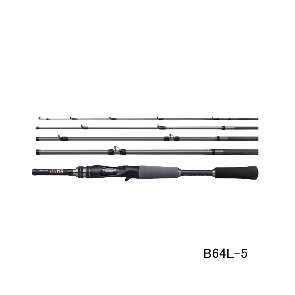
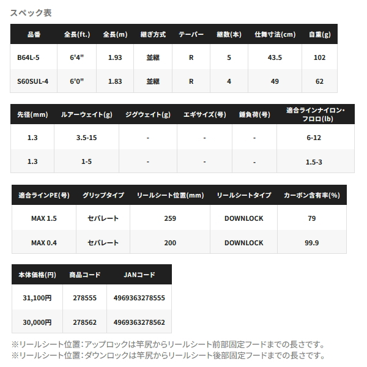
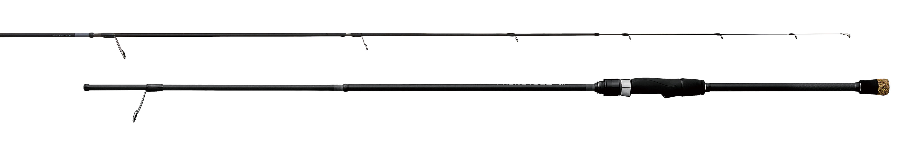
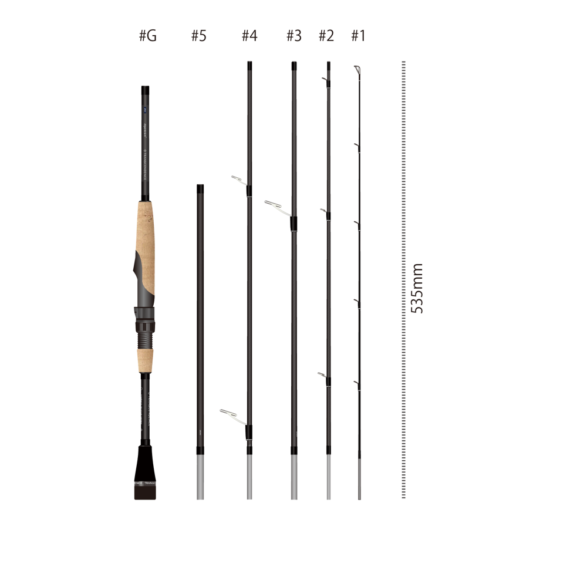

アンフィックス
（UNFIX）
アンフィックスは、シマノのモバイルゲームロッドのシリーズです。コンセプトは「アソビカタに、キマリはない」。スキマ時間や旅先、サイクリングのついでなど、場所や時間を選ばずに釣りを楽しむためのロッドです。
全モデルの仕舞寸法が57cm以下なのに、専用ロッドに迫るスペックを目指したのが最大の特徴。バス・シーバス・青物・ライトゲームから堤防のエサ釣りまで、全14機種がそろっています。

画像出典:フーガショップ
スペック
- メーカー
- SHIMANO（シマノ）
- 機種
- 全14機種（ベイト6・スピニング8）
- 長さ
- 5'8"〜8'6"（1.73〜2.59m）
- 継数
- 4〜5本（並継）
- 仕舞寸法
- 43.5〜56.4cm
- 自重
- 62〜132g
- ルアー重量
- 0.6〜72g
- PEライン
- MAX 0.4〜6号
- 付属品
- 専用ケース
- 発売
- 2024年（B64L-5・S60SUL-4は2026年9月追加）
- 価格
- 30,000〜33,700円（税抜）
▼今すぐチェック


アンフィックスの特徴
アソビカタに、キマリはない
-
全モデルの仕舞寸法が57cm以下
持ち運びやすさを最優先にした、4〜5本継のマルチピース設計。いちばん長い8'6"のモデルでも仕舞寸法は56.4cmで、旅行のついでや電車・自転車での釣行にも持ち出しやすい。
-
遊び用でもスペックに妥協しない
ブランクのねじれを抑えるシマノの「スパイラルX」と、軽くて強い「CI4+」のリールシートを採用。アジング用のS58UL-S/4には、感度の高い「ハイレスポンスソリッド」のティップを使っている。
-
自転車にも付けられる専用ケース付き
どこにでも持ち出せる専用ケースが付属。長めのバンドが付いていて、自転車のフレームやランディングネットに括り付けることもできる。
アンフィックス全14機種の使い分け
品番の「B」はベイト、「S」はスピニング、最後の数字は継数です。「こんな釣りに」は、ルアー重量などのスペックから見た目安です。
| 品番 | 長さ／ |
仕舞寸 |
自重 | ルアー重量 | PE | 本体 |
こんな |
|---|---|---|---|---|---|---|---|
| B64L-5 | 6'4"／ |
43.5cm | 102g | 3.5-15g | MAX1.5号 | 31,100円 | バスの |
| B66ML-5 | 6'6"／ |
45cm | 110g | 5-21g | MAX2号 | 31,600円 | バスの |
| B66M-5 | 6'6"／ |
45.4cm | 105g | 7-28g | MAX3号 | 32,100円 | テキサスリグや |
| B66MH-5 | 6'6"／ |
46cm | 117g | 10-42g | MAX4号 | 32,600円 | カバー撃ちや |
| B66H-5 | 6'6"／ |
46.6cm | 120g | 14-56g | MAX5号 | 33,100円 | ビッグベイトや |
| B66XH-5 | 6'6"／ |
47.2cm | 122g | 18-72g | MAX6号 | 33,600円 | いちばん強い |
| S58UL-S/4 | 5'8"／ |
50cm | 65g | 0.6-6g | MAX0.6号 | 30,500円 | アジング・ |
| S60SUL-4 | 6'0"／ |
49cm | 62g | 1-5g | MAX0.4号 | 30,000円 | 渓流や |
| S64UL-5 | 6'4"／ |
43.5cm | 87g | 3-12g | MAX0.8号 | 30,500円 | ライトゲームや |
| S64L-5 | 6'4"／ |
44.7cm | 90g | 4-15g | MAX1号 | 31,000円 | バスや |
| S70M-5 | 7'0"／ |
48.8cm | 112g | 8-35g |
MAX1.5号 | 32,100円 | シーバスや |
| S70MH-5 | 7'0"／ |
47.6cm | 117g | 10-42g |
MAX2号 | 32,600円 | 青物や |
| S76ML-5 | 7'6"／ |
50.7cm | 125g | 7-28g |
MAX1.2号 | 32,600円 | エギングや |
| S86M-5 | 8'6"／ |
56.4cm | 132g | 8-35g |
MAX1.5号 | 33,700円 | シーバス・ |

画像出典:フーガショップ
※スペックはシマノ公式HPの記載より（2026年追加の2機種の詳細は上の表）。本体価格は税抜です。
アンフィックスの使い方
まずは、自分がいちばんよく行く釣りに合わせて1本を選び、いつもカバンや自転車に積んでおくのがおすすめです。旅先や仕事帰りに良さそうな場所を見つけたら、すぐに組んで投げられます。
迷ったら、バスならB66ML-5、海のルアー釣りならS70M-5やS86M-5のように、ルアー重量の幅が広い機種を選ぶと、いろいろな釣りに対応できます。
アンフィックスがおすすめの人
旅行や出張のついでに釣りをしたい人、電車や自転車で釣りに行く人、車に常に1本積んでおきたい人におすすめです。
仕舞寸法57cm以下でも、バス・シーバス・青物・エギング・ライトゲームと、釣りに合わせた専用の機種を選べるのが強み。持ち運びやすさのために釣りを妥協しなくてよいので、出先でもしっかり釣れる1本になります。
ワンポイント
5本継のロッドは、継ぎ目がゆるむとガイドの向きがずれたり、継ぎ目が傷んだりします。組むときはガイドの向きを合わせてしっかり差し込み、釣りの合間にもときどき継ぎ目のゆるみを確かめると、ロッド本来の性能を出せて長く使えます。
▼今すぐチェック
アンフィックスとあわせてチェックしたいアイテム
-

ラグゼ パックスタイル A3 がまかつ 詳細はこちら＞A3サイズに収まるパックロッド。青物やビッグベイトのモデルもある。
-
 ズームサファリ
アブガルシア
詳細はこちら＞
ズームサファリ
アブガルシア
詳細はこちら＞
エサでもルアーでも楽しめる、マルチピースのお手軽ロッド。
-

スペラール64S+ TRANSCENDENCE 詳細はこちら＞長さを変えられるフィネス用のスピニングパックロッド。